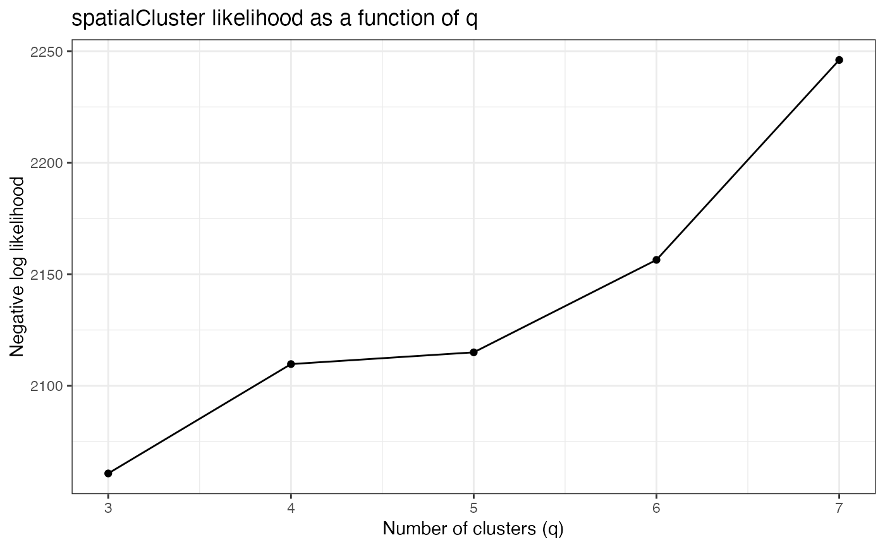

R/qTune.R
qTune.RdBefore running spatialCluster(), we recommend tuning the choice of
q by choosing the q that maximizes the model's negative log
likelihood over early iterations. qTune() computes the average
negative log likelihood for a range of q values over iterations 100:1000, and
qPlot() displays the results.
qPlot(sce, qs = seq(3, 7), force.retune = FALSE, ...) qTune(sce, qs = seq(3, 7), min_rep = 100, max_rep = 1000, ...)
| sce | A SingleCellExperiment object containing the spatial data. |
|---|---|
| qs | The values of q to evaluate. |
| force.retune | If specified, existing tuning values in |
| ... | Other parameters are passed to |
| min_rep, max_rep | Integers specifying the range of repetitions to compute |
qTune() returns a modified sce with tuning log
likelihoods stored as an attribute named "q.logliks".
qPlot() returns a ggplot object.
qTune() takes the same parameters as spatialCluster() and will
run the MCMC clustering algorithm up to max_rep iterations for each
value of q. The first min_rep iterations are discarded as
burn-in and the log likelihood is averaged over the remaining iterations.
qPlot() plots the computed negative log likelihoods as a function of
q. If qTune() was run previously, i.e. there exists an attribute of
sce named "q.logliks", the pre-computed results are
displayed. Otherwise, or if force.retune is specified,
qplot() will automatically run qTune() before plotting (and
can take the same parameters as spatialCluster().
#>#>#>#>#>#>qPlot(sce)